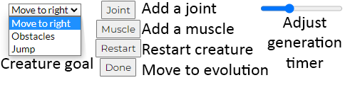

Instructions
To simulate evolution of a creature, you first have to create one! To do this, use the controls under the window. The "joint" button creates
circles which "muscles" can be attached to. The muscles are what moves the creature, so make sure to add plenty of them between the joints.
When you're done, choose a simulation type by selecting a creature goal, set the time of each generation and press "done". You should be able
to observe the creatures improving from as early as the 5th generation, with improvement continuing even further from there!
>
The goal of this project is to intuitively teach the fundamentals of real life evolutions through the machine learning based neuroevolution of AI creatures.
